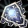
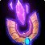
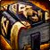
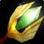

Touch of Inspiration
Touch of InspirationTouch of Inspiration24 stamina, 21 intellect, 22 spell damage, 64 healing powerDrops from Reliquary of Souls, Black Temple
24 stamina, 21 intellect, 22 spell damage, 64 healing power
Drops from Reliquary of Souls, Black Temple
What influencers say
Zatar (Classic Wow Builds)
Zatar (Classic Wow Builds) · 68:49
67k views
Speaks well of it
Zatar calls it the second best healer offhand, behind the Archimonde
one, and would give it to whoever is not using a staff.
Showing all 4 spec cards.
No specs are selected, so no cards are showing. Use Show every spec to bring all of them back.
Holy Paladin
not yet decided
Constraints
No hit cap applies to this spec.
No crit cap.
Global cooldown floor at 50% spell haste, which nothing rostered reaches
from gear this phase.
Delta
Touch of InspirationTouch of Inspiration24 stamina, 21 intellect, 22 spell damage, 64
healing powerDrops from Reliquary
of Souls, Black Temple in
Holy Paladin terms
| Stat | Over best weapon, Hyjal
Summit
 Bastion of LightBastion of Light5930 armor, 28 stamina, 28 intellect, 21 spell damage, 62 healing power, 160 block valueSockets redDrops from Anetheron, Mount Hyjal |
Over second best, Black Temple Felstone BulwarkFelstone Bulwark5930 armor, 28 stamina, 21 intellect, 22 spell damage, 64 healing power, 27 spell crit rating (1.22%), 160 block valueDrops from Supremus, Black Temple | Over third best, Hyjal Summit
 Scepter of PurificationScepter of Purification24 stamina, 17 intellect, 25 spirit, 26 spell damage, 77 healing powerDrops from Archimonde, Mount Hyjal |
Over fourth best, Badge of Justice Tears of HeavenTears of Heaven25 spell damage, 75 healing power | Over Season 2
arena, Season 2
 Merciless Gladiator's ReprieveMerciless Gladiator's Reprieve27 stamina, 19 intellect, 21 spell damage, 62 healing power, 27 resilience |
|||||
|---|---|---|---|---|---|---|---|---|---|---|
| Change | Converted | Change | Converted | Change | Converted | Change | Converted | Change | Converted | |
| armor | -5930 | -5930 | 0 | 0 | 0 | |||||
| stamina | -4 | -4 | 0 | +24 | -3 | |||||
| intellect | -7 | 0 | +4 | +21 | +2 | |||||
| spirit | 0 | 0 | -25 | 0 | 0 | |||||
| spell damage | +1 | 0 | -4 | -3 | +1 | |||||
| healing power | +2 | 0 | -13 | -11 | +2 | |||||
| spell crit | 0 | -27 | -1.22% | 0 | 0 | 0 | ||||
| block value | -160 | -160 | 0 | 0 | 0 | |||||
| resilience | 0 | 0 | 0 | 0 | -27 | |||||
| Net | -1.22% spell crit | |||||||||
No Season 3 arena and no carried into the tier is ranked for this spec
in this slot, so that comparison is not shown. A weapon the workbook
does not rank cannot be compared against, and a spec with no captured
gear set has nothing recorded to carry in.
Restoration Shaman
not yet decided
Constraints
No hit cap applies to this spec.
No crit cap.
Global cooldown floor at 50% spell haste, which nothing rostered reaches
from gear this phase.
Delta
Touch of InspirationTouch of Inspiration24 stamina, 21 intellect, 22 spell damage, 64
healing powerDrops from Reliquary
of Souls, Black Temple in
Restoration Shaman terms
| Stat | Over best weapon, Hyjal Summit Bastion of LightBastion of Light5930 armor, 28 stamina, 28 intellect, 21 spell damage, 62 healing power, 160 block valueSockets redDrops from Anetheron, Mount Hyjal | Over second best, Black Temple Felstone BulwarkFelstone Bulwark5930 armor, 28 stamina, 21 intellect, 22 spell damage, 64 healing power, 27 spell crit rating (1.22%), 160 block valueDrops from Supremus, Black Temple | Over third best, Badge of Justice Tears of HeavenTears of Heaven25 spell damage, 75 healing power | Over fourth best, Hyjal Summit Scepter of PurificationScepter of Purification24 stamina, 17 intellect, 25 spirit, 26 spell damage, 77 healing powerDrops from Archimonde, Mount Hyjal | Over Season 2 arena, Season 2 Merciless Gladiator's ReprieveMerciless Gladiator's Reprieve27 stamina, 19 intellect, 21 spell damage, 62 healing power, 27 resilience | |||||
|---|---|---|---|---|---|---|---|---|---|---|
| Change | Converted | Change | Converted | Change | Converted | Change | Converted | Change | Converted | |
| armor | -5930 | -5930 | 0 | 0 | 0 | |||||
| stamina | -4 | -4 | +24 | 0 | -3 | |||||
| intellect | -7 | 0 | +21 | +4 | +2 | |||||
| spirit | 0 | 0 | 0 | -25 | 0 | |||||
| spell damage | +1 | 0 | -3 | -4 | +1 | |||||
| healing power | +2 | 0 | -11 | -13 | +2 | |||||
| spell crit | 0 | -27 | -1.22% | 0 | 0 | 0 | ||||
| block value | -160 | -160 | 0 | 0 | 0 | |||||
| resilience | 0 | 0 | 0 | 0 | -27 | |||||
| Net | -1.22% spell crit | |||||||||
No Season 3 arena and no carried into the tier is ranked for this spec
in this slot, so that comparison is not shown. A weapon the workbook
does not rank cannot be compared against, and a spec with no captured
gear set has nothing recorded to carry in.
Restoration Druid
not yet decided
Constraints
No hit cap applies to this spec.
No crit cap.
Part of this spec's damage is periodic, and periodic damage cannot crit
in this patch, so crit reaches less of its output than the character
sheet suggests.
Global cooldown floor at 50% spell haste, which nothing rostered reaches
from gear this phase.
Delta
Touch of InspirationTouch of Inspiration24 stamina, 21 intellect, 22 spell damage, 64
healing powerDrops from Reliquary
of Souls, Black Temple in
Restoration Druid terms
| Stat | Over best weapon, Hyjal Summit Scepter of PurificationScepter of Purification24 stamina, 17 intellect, 25 spirit, 26 spell damage, 77 healing powerDrops from Archimonde, Mount Hyjal | Over second best, Badge of Justice Tears of HeavenTears of Heaven25 spell damage, 75 healing power | Over third best, Tempest Keep
 Talisman of the Sun KingTalisman of the Sun King27 stamina, 24 intellect, 20 spell damage, 59 healing powerDrops from Al'ar, Tempest Keep |
Over fourth best, Cenarion Expedition Windcaller's OrbWindcaller's Orb16 intellect, 12 spirit, 22 spell damage, 64 healing power | Over Season 2 arena, Season 2 Merciless Gladiator's ReprieveMerciless Gladiator's Reprieve27 stamina, 19 intellect, 21 spell damage, 62 healing power, 27 resilience | |||||
|---|---|---|---|---|---|---|---|---|---|---|
| Change | Converted | Change | Converted | Change | Converted | Change | Converted | Change | Converted | |
| stamina | 0 | +24 | -3 | +24 | -3 | |||||
| intellect | +4 | +21 | -3 | +5 | +2 | |||||
| spirit | -25 | 0 | 0 | -12 | 0 | |||||
| spell damage | -4 | -3 | +2 | 0 | +1 | |||||
| healing power | -13 | -11 | +5 | 0 | +2 | |||||
| resilience | 0 | 0 | 0 | 0 | -27 | |||||
No Season 3 arena and no carried into the tier is ranked for this spec
in this slot, so that comparison is not shown. A weapon the workbook
does not rank cannot be compared against, and a spec with no captured
gear set has nothing recorded to carry in.
Rates
Priest Healer
not yet decided
Constraints
No hit cap applies to this spec.
No crit cap.
Global cooldown floor at 50% spell haste, which nothing rostered reaches
from gear this phase.
Delta
Touch of InspirationTouch of Inspiration24 stamina, 21 intellect, 22 spell damage, 64
healing powerDrops from Reliquary
of Souls, Black Temple in
Priest Healer terms
| Stat | Over best weapon, Hyjal Summit Scepter of PurificationScepter of Purification24 stamina, 17 intellect, 25 spirit, 26 spell damage, 77 healing powerDrops from Archimonde, Mount Hyjal | Over second best, Karazhan Signet of Unshakable FaithSignet of Unshakable Faith19 stamina, 21 intellect, 22 spirit, 13 spell damage, 37 healing powerDrops from Moroes, Karazhan | Over third best, Tempest Keep Talisman of the Sun KingTalisman of the Sun King27 stamina, 24 intellect, 20 spell damage, 59 healing powerDrops from Al'ar, Tempest Keep | Over fourth best, Cenarion Expedition Windcaller's OrbWindcaller's Orb16 intellect, 12 spirit, 22 spell damage, 64 healing power | Over Season 2 arena, Season 2 Merciless Gladiator's ReprieveMerciless Gladiator's Reprieve27 stamina, 19 intellect, 21 spell damage, 62 healing power, 27 resilience | |||||
|---|---|---|---|---|---|---|---|---|---|---|
| Change | Converted | Change | Converted | Change | Converted | Change | Converted | Change | Converted | |
| stamina | 0 | +5 | -3 | +24 | -3 | |||||
| intellect | +4 | 0 | -3 | +5 | +2 | |||||
| spirit | -25 | -22 | 0 | -12 | 0 | |||||
| spell damage | -4 | +9 | +2 | 0 | +1 | |||||
| healing power | -13 | +27 | +5 | 0 | +2 | |||||
| resilience | 0 | 0 | 0 | 0 | -27 | |||||
No Season 3 arena and no carried into the tier is ranked for this spec
in this slot, so that comparison is not shown. A weapon the workbook
does not rank cannot be compared against, and a spec with no captured
gear set has nothing recorded to carry in.
Rates